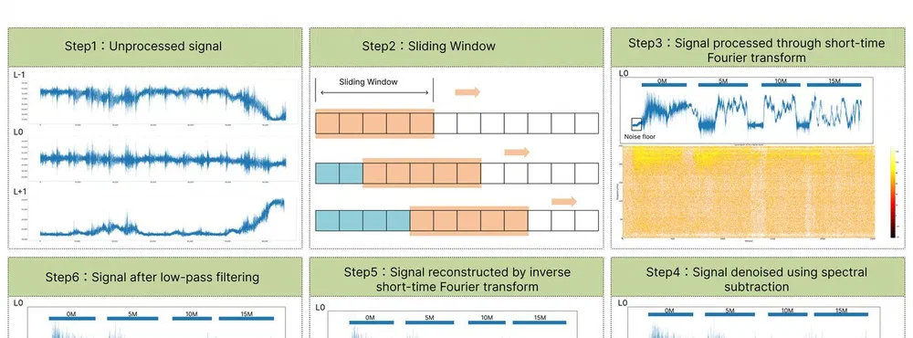
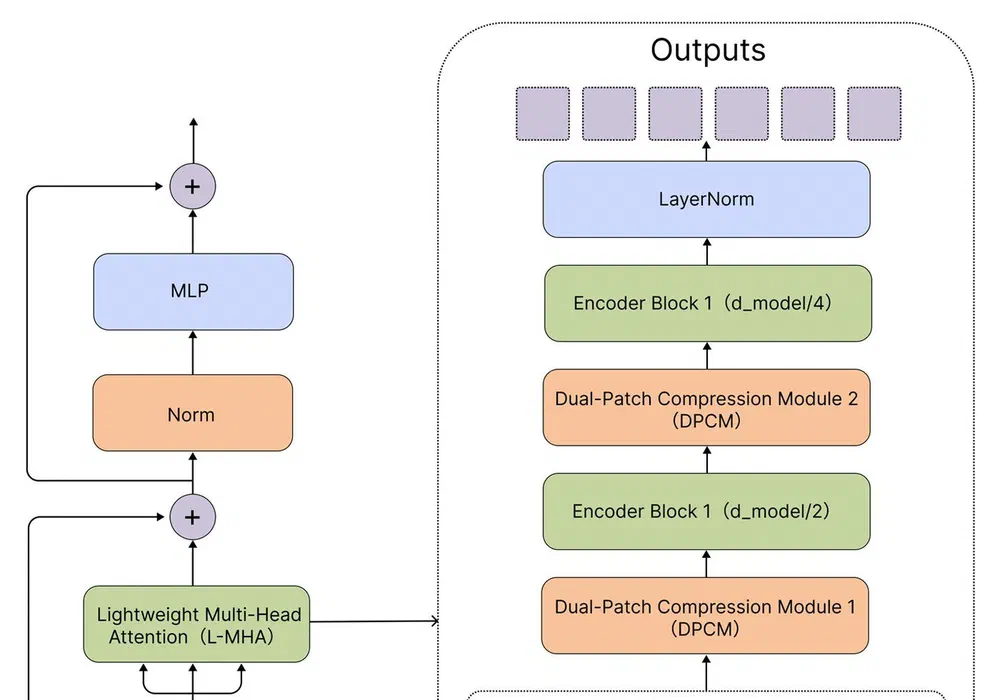
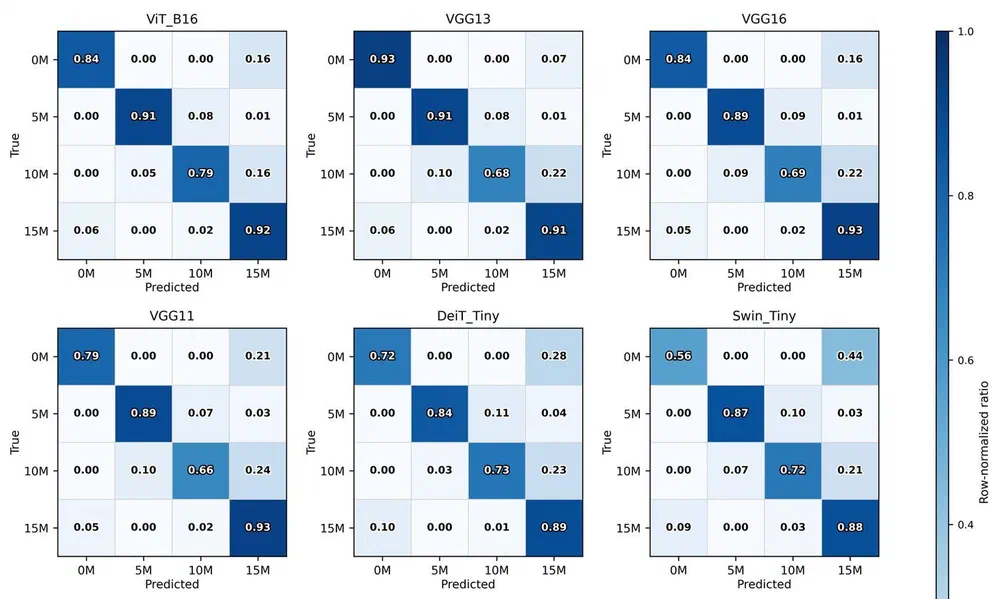
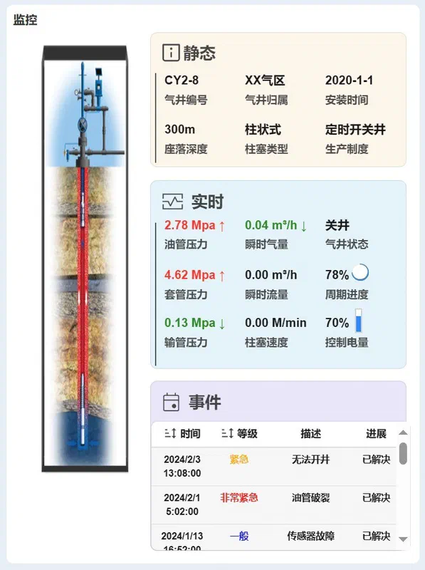
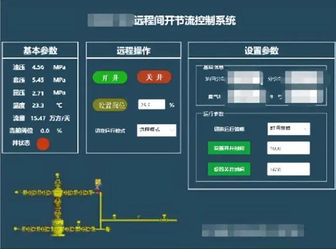
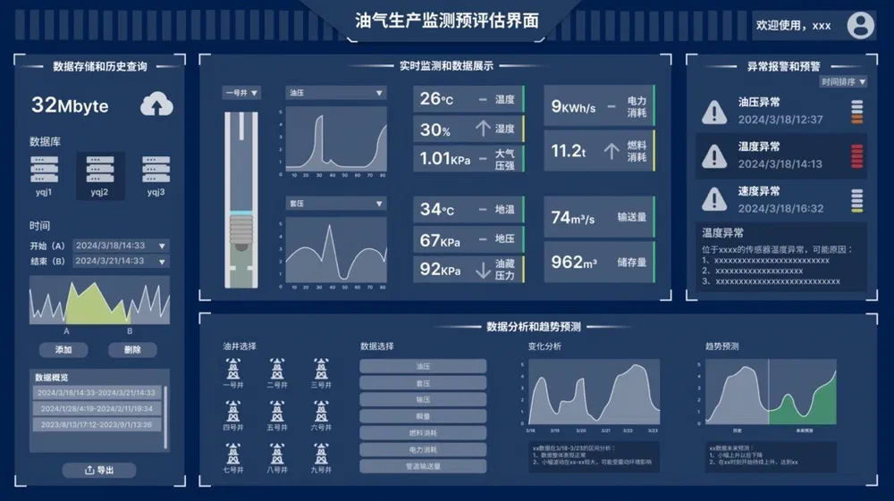

智能分析与轻量化部署
一、智能分析与轻量化部署的技术体系与研究平台
油气长输管道与气田生产现场正快速进入数字化阶段。管道内检测、井口压力与产量监测等环节持续产生高频、高维的现场数据，单井分钟级压力记录的年累积量已达数十万条量级。数据的规模与复杂度使人工判读和经验分析难以支撑，而现场端算力受限、供电与网络条件不稳定，又要求分析模型尽可能轻量、能够实时响应。因此，“智能分析—轻量化部署”构成一体两面的技术主线：前者解决“数据看不完、标不准”的问题，后者解决“模型跑不动、上不了现场”的问题。
本方向采用“检测—分类”解耦的级联策略，把缺陷定位与类型识别拆为两个阶段，分别由最适合的预训练模型承担。级联框架的第一阶段使用预训练 YOLOv5 目标检测模型完成缺陷的快速定位与候选区域提取，第二阶段将候选区域送入预训练的视觉 ViT完成缺陷类型识别。这种解耦设计兼顾了小样本与离线训练的现实约束——预训练骨干已在通用图像上习得充分的纹理表征，在缺陷专用数据有限时仍能保持稳定性能。在定性识别的基础上，进一步研究缺陷轴向长度与深度的定量预测。做法是先把轴向、径向、周向三路漏磁信号按通道融合为三通道图像并滤除噪声，再以 YOLOv8x 完成缺陷定位；随后对每个缺陷取最大锚框截取样本，将缺陷矩阵的数值特征转换为图像形式，连同三通道合成图共 6 种数据形式一并送入多输入并行卷积网络训练，使网络分别从不同表征角度提取互补特征。


图：YOLOv8 缺陷检测网络结构，以及 YOLOv8 检测框与标准尺寸框的对比
二、漏磁信号重建与生成式样本增强
漏磁信号采集环境恶劣、采集速度快、单次采集时间长，实际数据普遍存在欠采样与通道缺失；同时真实缺陷样本数量少、类别分布极不均衡。两个问题分别对应本方向的两条技术路线：以物理先验约束的信号重建，和以生成模型驱动的样本增强。
针对真实缺陷样本稀缺与类别不平衡问题，采用类别编码的扩散模型生成漏磁缺陷信号。生成过程以去噪扩散概率模型（DDPM）为骨架：正向过程对样本逐步加噪至近似高斯噪声，反向过程由带类别嵌入的 U-Net 逐步去噪复原样本，训练目标为预测噪声的均方误差。关键设计在于把缺陷类别作为控制信息编码进网络——仿真缺陷按裂纹、针孔、点蚀、凹槽、沟纹、普通金属损失六种类型各分轴线数据与径向数据两组，共 12 组（编号 A~L）作为类别标签输入模型，从而在采样阶段通过改变类别参数定向生成指定类型的缺陷样本。


图：类别编码扩散模型的训练过程（类别图像→加噪→U-Net 预测噪声）与反向去噪采样过程
三、油气生产数据智能预测与工况诊断
柱塞气举是解决气井井底积液的有效人工举升方式，其一个完整生产周期可分为积液、举升、卸载等阶段，不同阶段的套管压力与油管压力变化规律各异。随着数字化柱塞控制系统与大容量数据库的普及，现场积累的海量压力数据为机器学习提供了基础，但缺乏经济高效的标注手段始终是制约因素。本方向提出一套无监督聚类诊断流程，从连续数据中自动切分周期并赋予工况标签。
流程分两步。第一步是周期点识别：在缺乏周期点标注的前提下，先开发基于局部极值搜索区间的无监督周期识别算法给出初始标签，并以该标签训练基于 Transformer 编码器的周期识别网络，实现周期点的自动定位；周期点用于把连续数据切分为周期性子数据集，并赋予积液早期、积液消除、积液后期与运行异常四类标签。第二步是降维与聚类：比较统计特征、多维标度（MDS）、主成分分析（PCA）与自编码器四类降维方式对聚类质量的影响，并采用带聚类层的 CNN-LSTM 自编码器，联合优化重构损失与聚类损失。


图：带聚类层的 CNN-LSTM 自编码器网络结构，以及不同降维方法的 AUC 收敛曲线对比
四、轻量化模型与边缘端实时部署
现场端算力与功耗受限，是智能分析算法落地的最后一公里。本方向围绕结构压缩、知识蒸馏与算子优化三条路径，把前述模型压缩到可在边缘设备上实时运行，并以具体工程任务验证压缩后的性能代价。
相位敏感光时域反射（Φ-OTDR）是管道安全监测中灵敏度极高的分布式振动传感技术，但其对环境的敏感也导致日常活动被误判为威胁，误报频发。要让告警具备可操作性，就需要把连续振动信号转换为可量化的风险等级。本方向建立了挖掘机与管道距离到威胁等级的映射关系：5 m 以内为“直接入侵”，10 m 以内为“高风险作业”，15 m 以外为“背景施工”。在模型侧，通过对标准视觉 Transformer 进行结构优化与参数压缩，提出轻量化模型 LP-ViT：以局部—全局混合注意力（L-MHA）替代标准多头注意力，引入相对位置编码（RPP）并设计双路压缩模块（DPCM），同时采用多维特征融合与模态转换机制抑制噪声、重建瞬态振动特征。
  


图：LP-ViT 轻量化网络结构（含双路压缩模块 DPCM 与轻量多头注意力 L-MHA），以及压缩前后模型在不同场景下的混淆矩阵对比
五、交互式数据可视化与智能运维平台
智能分析的结果只有被现场人员真正用起来才有价值。工业现场的数据平台普遍存在功能模块布局不合理、信息层次不清晰、视觉呈现不准确、图表缺乏交互性等问题。本方向把可视化与交互设计作为独立的研究对象，形成“分析算法—可视化平台—人机验证”的闭环。
平台设计遵循信息框架、设计规范、界面实现、可用性验证的流程。信息框架层面，对功能模块进行集成、深化核心功能、优化信息检索路径；设计规范层面，确立色彩规范、文字规范与图标规范；实现层面基于 HTML5 与 JavaScript 开发，包含监控模块、日平均指标模块、十二小时趋势模块与历史数据分析可视化模块，并同时支持视图交互与事件交互。
  


图：油气生产数据监测与预评估界面